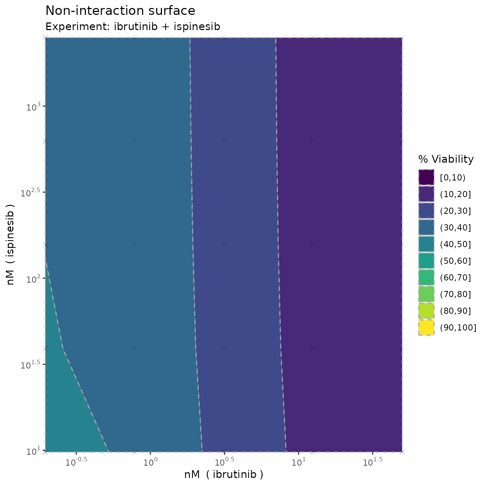
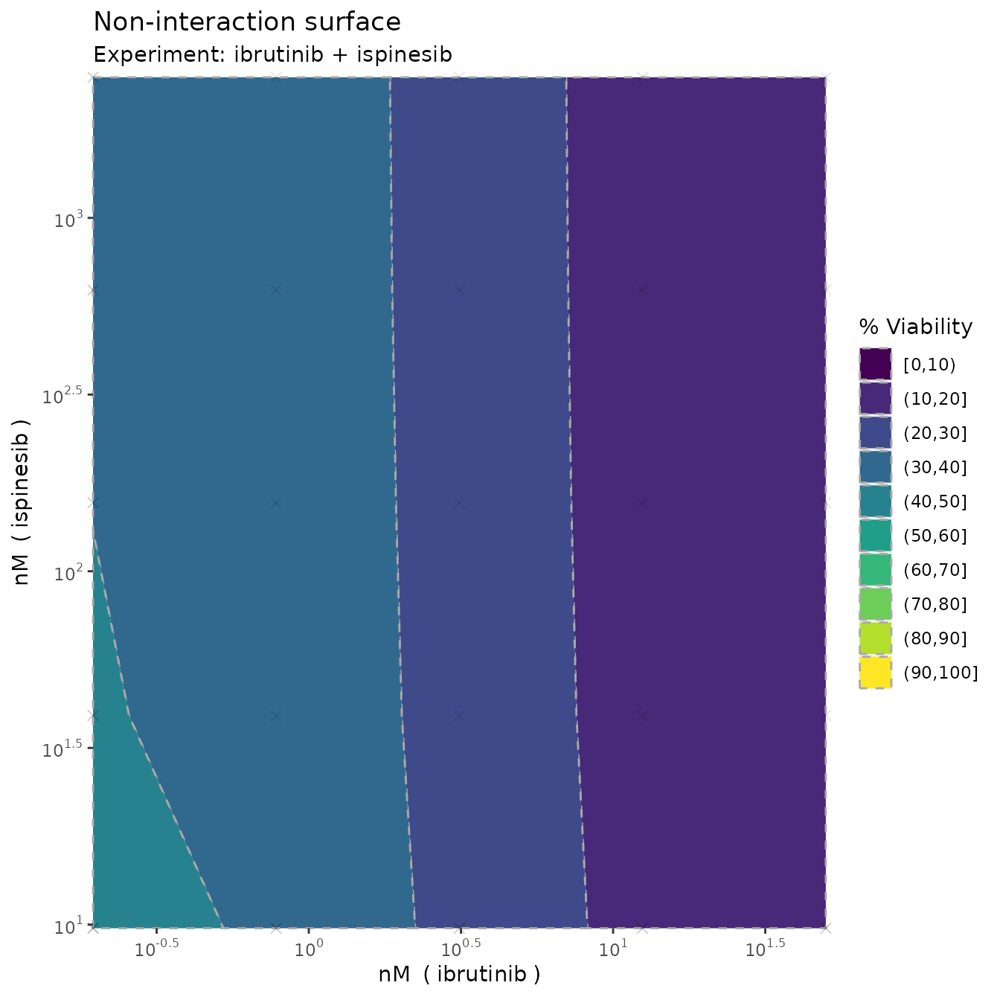

Example: Single experiment
Example_single.RmdIn the R package, we’ve attached two example datasets from a large drug combination screening experiment on diffuse large B-cell lymphoma. We’ll use these to show some simple use cases of the main functions and how to interpret the results.
Let’s load in the first example and have a look at it
library(bayesynergy)
data("mathews_DLBCL")
y = mathews_DLBCL[[1]][[1]]
x = mathews_DLBCL[[1]][[2]]
head(cbind(y,x))## Viability ibrutinib ispinesib
## [1,] 1.2295618 0.0000 0
## [2,] 1.0376006 0.1954 0
## [3,] 1.1813851 0.7812 0
## [4,] 0.5882688 3.1250 0
## [5,] 0.4666700 12.5000 0
## [6,] 0.2869514 50.0000 0We see that the the measured viability scores are stored in the
vector y, while x is a matrix with two columns
giving the corresponding concentrations where the viability scores were
read off.
Fitting the regression model is simple enough, and can be done on default settings simply by running the following code (where we add the names of the drugs involved, the concentration units for plotting purposes, and calculate the bayes factor).
fit = bayesynergy(y,x, drug_names = c("ibrutinib", "ispinesib"),
units = c("nM","nM"),bayes_factor = T)##
## SAMPLING FOR MODEL 'gp_grid' NOW (CHAIN 1).
## Chain 1:
## Chain 1: Gradient evaluation took 0.000127 seconds
## Chain 1: 1000 transitions using 10 leapfrog steps per transition would take 1.27 seconds.
## Chain 1: Adjust your expectations accordingly!
## Chain 1:
## Chain 1:
## Chain 1: Iteration: 1 / 2000 [ 0%] (Warmup)
## Chain 1: Iteration: 200 / 2000 [ 10%] (Warmup)
## Chain 1: Iteration: 400 / 2000 [ 20%] (Warmup)
## Chain 1: Iteration: 600 / 2000 [ 30%] (Warmup)
## Chain 1: Iteration: 800 / 2000 [ 40%] (Warmup)
## Chain 1: Iteration: 1000 / 2000 [ 50%] (Warmup)
## Chain 1: Iteration: 1001 / 2000 [ 50%] (Sampling)
## Chain 1: Iteration: 1200 / 2000 [ 60%] (Sampling)
## Chain 1: Iteration: 1400 / 2000 [ 70%] (Sampling)
## Chain 1: Iteration: 1600 / 2000 [ 80%] (Sampling)
## Chain 1: Iteration: 1800 / 2000 [ 90%] (Sampling)
## Chain 1: Iteration: 2000 / 2000 [100%] (Sampling)
## Chain 1:
## Chain 1: Elapsed Time: 2.51775 seconds (Warm-up)
## Chain 1: 2.43892 seconds (Sampling)
## Chain 1: 4.95668 seconds (Total)
## Chain 1:
##
## SAMPLING FOR MODEL 'gp_grid' NOW (CHAIN 2).
## Chain 2:
## Chain 2: Gradient evaluation took 6.5e-05 seconds
## Chain 2: 1000 transitions using 10 leapfrog steps per transition would take 0.65 seconds.
## Chain 2: Adjust your expectations accordingly!
## Chain 2:
## Chain 2:
## Chain 2: Iteration: 1 / 2000 [ 0%] (Warmup)
## Chain 2: Iteration: 200 / 2000 [ 10%] (Warmup)
## Chain 2: Iteration: 400 / 2000 [ 20%] (Warmup)
## Chain 2: Iteration: 600 / 2000 [ 30%] (Warmup)
## Chain 2: Iteration: 800 / 2000 [ 40%] (Warmup)
## Chain 2: Iteration: 1000 / 2000 [ 50%] (Warmup)
## Chain 2: Iteration: 1001 / 2000 [ 50%] (Sampling)
## Chain 2: Iteration: 1200 / 2000 [ 60%] (Sampling)
## Chain 2: Iteration: 1400 / 2000 [ 70%] (Sampling)
## Chain 2: Iteration: 1600 / 2000 [ 80%] (Sampling)
## Chain 2: Iteration: 1800 / 2000 [ 90%] (Sampling)
## Chain 2: Iteration: 2000 / 2000 [100%] (Sampling)
## Chain 2:
## Chain 2: Elapsed Time: 2.50408 seconds (Warm-up)
## Chain 2: 2.64537 seconds (Sampling)
## Chain 2: 5.14945 seconds (Total)
## Chain 2:
##
## SAMPLING FOR MODEL 'gp_grid' NOW (CHAIN 3).
## Chain 3:
## Chain 3: Gradient evaluation took 6.3e-05 seconds
## Chain 3: 1000 transitions using 10 leapfrog steps per transition would take 0.63 seconds.
## Chain 3: Adjust your expectations accordingly!
## Chain 3:
## Chain 3:
## Chain 3: Iteration: 1 / 2000 [ 0%] (Warmup)
## Chain 3: Iteration: 200 / 2000 [ 10%] (Warmup)
## Chain 3: Iteration: 400 / 2000 [ 20%] (Warmup)
## Chain 3: Iteration: 600 / 2000 [ 30%] (Warmup)
## Chain 3: Iteration: 800 / 2000 [ 40%] (Warmup)
## Chain 3: Iteration: 1000 / 2000 [ 50%] (Warmup)
## Chain 3: Iteration: 1001 / 2000 [ 50%] (Sampling)
## Chain 3: Iteration: 1200 / 2000 [ 60%] (Sampling)
## Chain 3: Iteration: 1400 / 2000 [ 70%] (Sampling)
## Chain 3: Iteration: 1600 / 2000 [ 80%] (Sampling)
## Chain 3: Iteration: 1800 / 2000 [ 90%] (Sampling)
## Chain 3: Iteration: 2000 / 2000 [100%] (Sampling)
## Chain 3:
## Chain 3: Elapsed Time: 4.07522 seconds (Warm-up)
## Chain 3: 2.73517 seconds (Sampling)
## Chain 3: 6.81039 seconds (Total)
## Chain 3:
##
## SAMPLING FOR MODEL 'gp_grid' NOW (CHAIN 4).
## Chain 4:
## Chain 4: Gradient evaluation took 6.5e-05 seconds
## Chain 4: 1000 transitions using 10 leapfrog steps per transition would take 0.65 seconds.
## Chain 4: Adjust your expectations accordingly!
## Chain 4:
## Chain 4:
## Chain 4: Iteration: 1 / 2000 [ 0%] (Warmup)
## Chain 4: Iteration: 200 / 2000 [ 10%] (Warmup)
## Chain 4: Iteration: 400 / 2000 [ 20%] (Warmup)
## Chain 4: Iteration: 600 / 2000 [ 30%] (Warmup)
## Chain 4: Iteration: 800 / 2000 [ 40%] (Warmup)
## Chain 4: Iteration: 1000 / 2000 [ 50%] (Warmup)
## Chain 4: Iteration: 1001 / 2000 [ 50%] (Sampling)
## Chain 4: Iteration: 1200 / 2000 [ 60%] (Sampling)
## Chain 4: Iteration: 1400 / 2000 [ 70%] (Sampling)
## Chain 4: Iteration: 1600 / 2000 [ 80%] (Sampling)
## Chain 4: Iteration: 1800 / 2000 [ 90%] (Sampling)
## Chain 4: Iteration: 2000 / 2000 [100%] (Sampling)
## Chain 4:
## Chain 4: Elapsed Time: 2.45817 seconds (Warm-up)
## Chain 4: 1.40739 seconds (Sampling)
## Chain 4: 3.86556 seconds (Total)
## Chain 4:
##
## SAMPLING FOR MODEL 'nointeraction' NOW (CHAIN 1).
## Chain 1:
## Chain 1: Gradient evaluation took 4.6e-05 seconds
## Chain 1: 1000 transitions using 10 leapfrog steps per transition would take 0.46 seconds.
## Chain 1: Adjust your expectations accordingly!
## Chain 1:
## Chain 1:
## Chain 1: Iteration: 1 / 2000 [ 0%] (Warmup)
## Chain 1: Iteration: 200 / 2000 [ 10%] (Warmup)
## Chain 1: Iteration: 400 / 2000 [ 20%] (Warmup)
## Chain 1: Iteration: 600 / 2000 [ 30%] (Warmup)
## Chain 1: Iteration: 800 / 2000 [ 40%] (Warmup)
## Chain 1: Iteration: 1000 / 2000 [ 50%] (Warmup)
## Chain 1: Iteration: 1001 / 2000 [ 50%] (Sampling)
## Chain 1: Iteration: 1200 / 2000 [ 60%] (Sampling)
## Chain 1: Iteration: 1400 / 2000 [ 70%] (Sampling)
## Chain 1: Iteration: 1600 / 2000 [ 80%] (Sampling)
## Chain 1: Iteration: 1800 / 2000 [ 90%] (Sampling)
## Chain 1: Iteration: 2000 / 2000 [100%] (Sampling)
## Chain 1:
## Chain 1: Elapsed Time: 0.329949 seconds (Warm-up)
## Chain 1: 0.389044 seconds (Sampling)
## Chain 1: 0.718993 seconds (Total)
## Chain 1:
##
## SAMPLING FOR MODEL 'nointeraction' NOW (CHAIN 2).
## Chain 2:
## Chain 2: Gradient evaluation took 2.9e-05 seconds
## Chain 2: 1000 transitions using 10 leapfrog steps per transition would take 0.29 seconds.
## Chain 2: Adjust your expectations accordingly!
## Chain 2:
## Chain 2:
## Chain 2: Iteration: 1 / 2000 [ 0%] (Warmup)
## Chain 2: Iteration: 200 / 2000 [ 10%] (Warmup)
## Chain 2: Iteration: 400 / 2000 [ 20%] (Warmup)
## Chain 2: Iteration: 600 / 2000 [ 30%] (Warmup)
## Chain 2: Iteration: 800 / 2000 [ 40%] (Warmup)
## Chain 2: Iteration: 1000 / 2000 [ 50%] (Warmup)
## Chain 2: Iteration: 1001 / 2000 [ 50%] (Sampling)
## Chain 2: Iteration: 1200 / 2000 [ 60%] (Sampling)
## Chain 2: Iteration: 1400 / 2000 [ 70%] (Sampling)
## Chain 2: Iteration: 1600 / 2000 [ 80%] (Sampling)
## Chain 2: Iteration: 1800 / 2000 [ 90%] (Sampling)
## Chain 2: Iteration: 2000 / 2000 [100%] (Sampling)
## Chain 2:
## Chain 2: Elapsed Time: 0.358284 seconds (Warm-up)
## Chain 2: 0.234098 seconds (Sampling)
## Chain 2: 0.592382 seconds (Total)
## Chain 2:
##
## SAMPLING FOR MODEL 'nointeraction' NOW (CHAIN 3).
## Chain 3:
## Chain 3: Gradient evaluation took 3e-05 seconds
## Chain 3: 1000 transitions using 10 leapfrog steps per transition would take 0.3 seconds.
## Chain 3: Adjust your expectations accordingly!
## Chain 3:
## Chain 3:
## Chain 3: Iteration: 1 / 2000 [ 0%] (Warmup)
## Chain 3: Iteration: 200 / 2000 [ 10%] (Warmup)
## Chain 3: Iteration: 400 / 2000 [ 20%] (Warmup)
## Chain 3: Iteration: 600 / 2000 [ 30%] (Warmup)
## Chain 3: Iteration: 800 / 2000 [ 40%] (Warmup)
## Chain 3: Iteration: 1000 / 2000 [ 50%] (Warmup)
## Chain 3: Iteration: 1001 / 2000 [ 50%] (Sampling)
## Chain 3: Iteration: 1200 / 2000 [ 60%] (Sampling)
## Chain 3: Iteration: 1400 / 2000 [ 70%] (Sampling)
## Chain 3: Iteration: 1600 / 2000 [ 80%] (Sampling)
## Chain 3: Iteration: 1800 / 2000 [ 90%] (Sampling)
## Chain 3: Iteration: 2000 / 2000 [100%] (Sampling)
## Chain 3:
## Chain 3: Elapsed Time: 0.348299 seconds (Warm-up)
## Chain 3: 0.381599 seconds (Sampling)
## Chain 3: 0.729898 seconds (Total)
## Chain 3:
##
## SAMPLING FOR MODEL 'nointeraction' NOW (CHAIN 4).
## Chain 4:
## Chain 4: Gradient evaluation took 2.9e-05 seconds
## Chain 4: 1000 transitions using 10 leapfrog steps per transition would take 0.29 seconds.
## Chain 4: Adjust your expectations accordingly!
## Chain 4:
## Chain 4:
## Chain 4: Iteration: 1 / 2000 [ 0%] (Warmup)
## Chain 4: Iteration: 200 / 2000 [ 10%] (Warmup)
## Chain 4: Iteration: 400 / 2000 [ 20%] (Warmup)
## Chain 4: Iteration: 600 / 2000 [ 30%] (Warmup)
## Chain 4: Iteration: 800 / 2000 [ 40%] (Warmup)
## Chain 4: Iteration: 1000 / 2000 [ 50%] (Warmup)
## Chain 4: Iteration: 1001 / 2000 [ 50%] (Sampling)
## Chain 4: Iteration: 1200 / 2000 [ 60%] (Sampling)
## Chain 4: Iteration: 1400 / 2000 [ 70%] (Sampling)
## Chain 4: Iteration: 1600 / 2000 [ 80%] (Sampling)
## Chain 4: Iteration: 1800 / 2000 [ 90%] (Sampling)
## Chain 4: Iteration: 2000 / 2000 [100%] (Sampling)
## Chain 4:
## Chain 4: Elapsed Time: 0.611773 seconds (Warm-up)
## Chain 4: 0.393772 seconds (Sampling)
## Chain 4: 1.00555 seconds (Total)
## Chain 4:## Calculating the Bayes factorThe resulting model can be summarised by running
summary(fit)## mean se_mean sd 2.5% 50% 97.5% n_eff Rhat
## la_1[1] 0.3322 0.002149 0.0753 1.42e-01 3.43e-01 0.449 1229.1 1.004
## la_2[1] 0.3702 0.024931 0.0963 4.30e-02 3.96e-01 0.455 14.9 1.300
## log10_ec50_1 0.4845 0.004545 0.1581 2.45e-01 4.49e-01 0.883 1209.4 1.005
## log10_ec50_2 -1.0434 0.019115 1.0051 -3.44e+00 -9.06e-01 0.456 2765.0 1.001
## slope_1 2.0332 0.020680 0.9587 8.66e-01 1.81e+00 4.628 2149.0 1.002
## slope_2 1.4105 0.102336 1.1343 5.60e-02 1.13e+00 4.356 122.9 1.029
## ell 3.0763 0.034833 1.5127 1.27e+00 2.73e+00 6.997 1885.9 1.003
## sigma_f 0.8485 0.015403 0.7480 1.84e-01 6.10e-01 2.920 2358.1 1.001
## s 0.0964 0.000274 0.0139 7.36e-02 9.50e-02 0.128 2577.7 1.004
## dss_1 33.4797 0.046772 2.8580 2.77e+01 3.35e+01 39.008 3733.9 1.000
## dss_2 59.3070 0.062939 2.7777 5.35e+01 5.94e+01 64.496 1947.8 1.005
## rVUS_f 82.7507 0.013902 0.8604 8.10e+01 8.28e+01 84.408 3830.6 1.000
## rVUS_p0 72.9534 0.037774 2.2175 6.83e+01 7.30e+01 77.007 3446.3 1.004
## VUS_Delta -9.7972 0.040220 2.3755 -1.47e+01 -9.74e+00 -5.404 3488.5 1.003
## VUS_syn -9.8405 0.040787 2.3371 -1.47e+01 -9.77e+00 -5.584 3283.3 1.003
## VUS_ant 0.0433 0.001734 0.0992 5.31e-06 8.26e-05 0.355 3272.4 0.999
##
## log-Pseudo Marginal Likelihood (LPML) = 52.40852
## Estimated Bayes factor in favor of full model over non-interaction only model: 40.21818which gives posterior summaries of the parameters of the model.
In addition, the model calculates summary statistics of the
monotherapy curves and the dose-response surface including drug
sensitivity scores (DSS) for the two drugs in question, as well as the
volumes that capture the notion of efficacy (rVUS_f),
interaction (VUS_Delta), synergy (VUS_syn) and
interaction (VUS_ant).
As indicated, the total combined drug efficacy is around 80%
(rVUS_f), of which around 70 percentage points can be
attributed to \(p_0\)
(rVUS_p0), leaving room for 10 percentage points worth of
synergy (VUS_syn). We can also note that the model is
fairly certain of this effect, with a 95% credible interval given as
(-14.688, -5.584). The certainty of this is also verified by the Bayes
factor, which at 40.22 indicates strong evidence of an interaction
effect present in the model.
Visualization
Monotherapy curves, 2D contour plots
We can also create plots by simply running
plot(fit, plot3D = F)

 

which produces monotherapy curves, monotherapy summary statistics, 2D contour plots of the dose-response function \(f\), the non-interaction assumption \(p_0\) and the interaction \(\Delta\). The last plot displays the \(rVUS\) scores as discussed previously, with corresponding uncertainty.